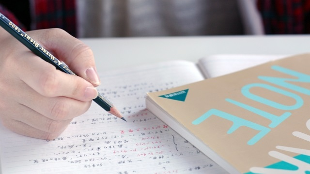

普段ならば家でごろごろテレビを見ているばかりの子供が、熱心に机に向かい定期テストの勉強をしている。親にとってこれほど「心安まる」光景はありません。やっとうちの子も目が覚めたか、と胸をなで下ろし、結果が良かったら子供がほしがっていたゲームを買ってあげようかな、と、優しい気持ちになるかもしれません。
しかし、今日はこの定期テスト勉強の「負の側面」を、あえて保護者の皆様にお伝えします。この記事を読んで、ちょっと違った視点でお子さんを見てみてください。
定期テスト勉強に熱心な生徒がなぜか受験に受からない
長く講師をやっていると、受験の合否に関して頭をひねりたくなるような結果にしばしばぶつかります。その最たるものが、「定期テストの準備をしっかりやる生徒がなぜか落ちる」というもの。特にこの傾向は高校生に顕著です。学校で出された課題をしっかりこなし、1ヶ月前から定期テストの勉強を始め、全教科そこそこ高得点を取る。学校の先生からの受けもよく、“ちょっと不器用だけどとてもマジメで優秀な生徒”とみられている。そんな生徒が大学入試になると片っ端から落ちていくことがあります。これは一体なぜでしょう。
定期テスト勉強は本来「やらなくてもよい」もの
この答えは、実は結構簡単です。定期テスト勉強は本来ならば「やらなくてもよい」ものなのです。というのも、定期テストは大学入試と違い、その範囲に合わせてしっかりと授業が行われます。先生方が授業の中で丁寧に手取り足取り重要な部分を解説し、場合によってはテストで出題する箇所を指示までしてくれます。つまり、こと定期テストに関して言えば、授業を聴いているだけですでに何十時間もその対策をしているのと同じ、ということなのです。
にも関わらず、授業に加えてさらに何時間も自習をする場合、その理由は大抵「授業を流している」からです。流しているというのはなにも適当にやっているというわけではありません。この場合の「流している」は、何も考えずに板書をひたすら写している状況を指します。板書はしっかりと写すに超したことはありません。しかし、板書よりも重要なのは、板書された説明の「どこが分からなかったか」、「どう思ったか」なのです。ノートに板書「以外」に何を書き残したかによって、その生徒の成績の伸びは大きく変わります。
定期テスト勉強とは授業の聴き方そのものである
上述したように、授業をうまく聞けているかどうかは、定期テストのみならず受験の合否も左右します。では、「うまく聞く」とはなにか。これはシンプルにいってしまえば「因果関係の理解」です。教科にかかわらず、生徒が躓く箇所は大抵「因果関係」の説明が不十分な場所です。ＡだからＢになり、結果Ｃになる、という流れを、ＡだからＣになる、と省略された説明を受けた場合、自分でＢのプロセスを埋められなければ全体が意味不明になってしまうでしょう。この「因果関係のプロセスの不足」を意識的に探しながら授業を聞く必要があります。こう言ってしまうと簡単に思えるかもしれませんが、プロセスの不足はそう簡単に見つかるものではありません。普段から「どんなプロセスが抜けているか」を考えていないと容易に聞き流してしまうでしょう。
このように、リアルタイムで自分の理解できていないところを炙り出していくことができれば、定期テスト前にもう一度同じ場所をやり直す必要性は大きく低下します。「理解」はすべて授業で終わらせ、「暗記」のみを後で行えば、大幅に「定期テスト勉強」の時間を短縮することができるでしょう。そして、この短縮できた時間こそ、「自分の勉強時間」になるわけです。外部から課されるテストに左右されず、自分で定めた目標を攻略するために自分で計画を立てて動けるこの時間こそが、入試に必要な学力を作り出します。
授業重視のテスト勉強と、自分の勉強時間の確保。ぜひ意識してみてください。